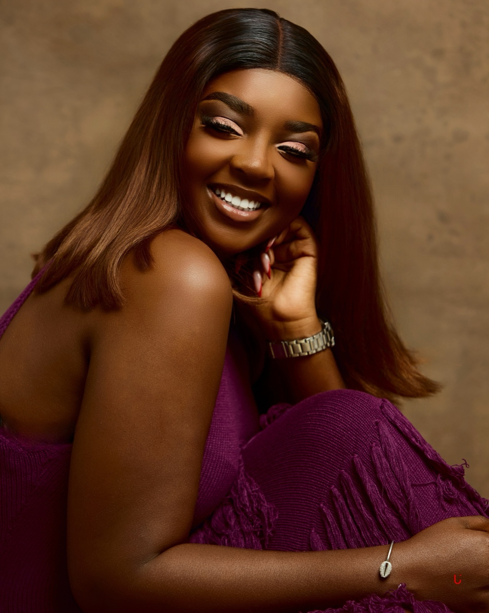
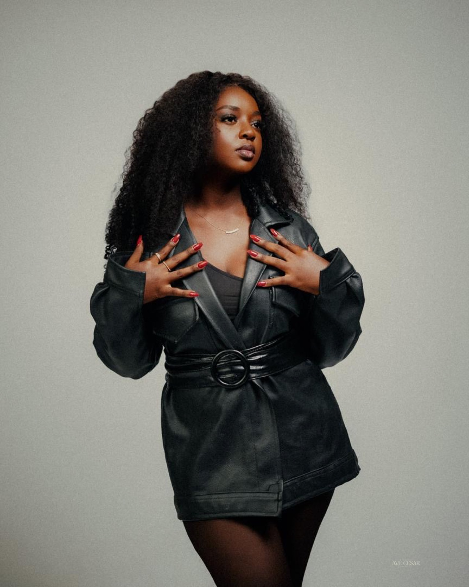
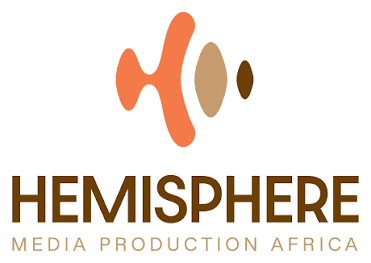
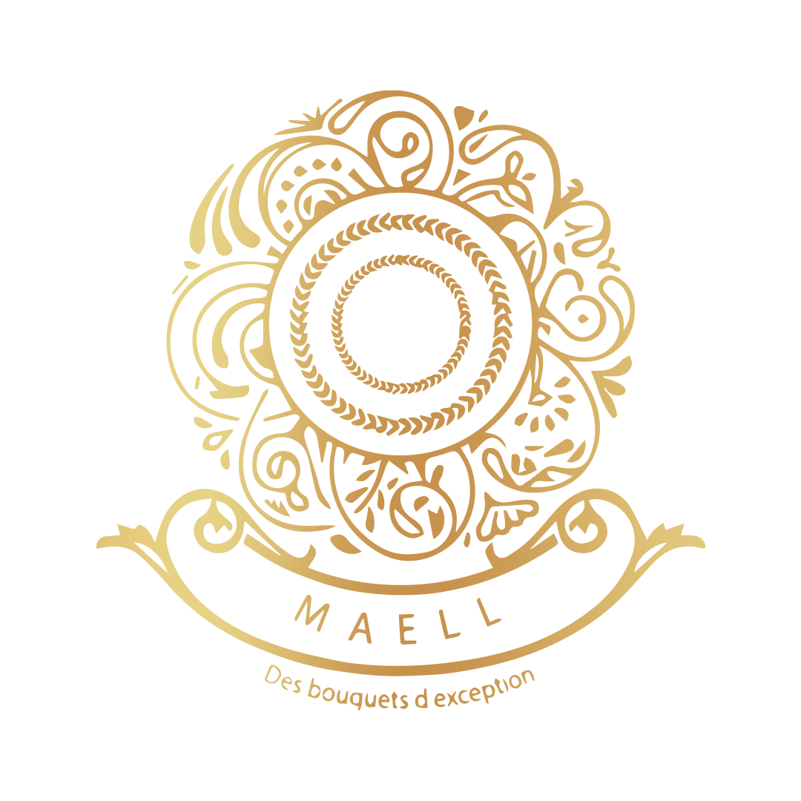
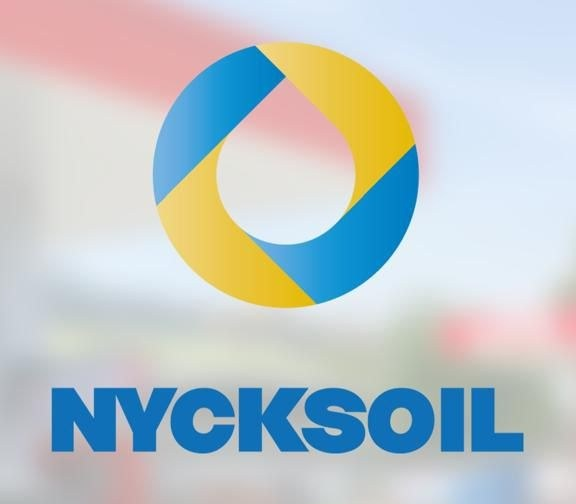
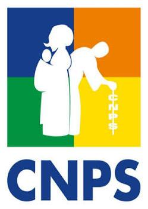
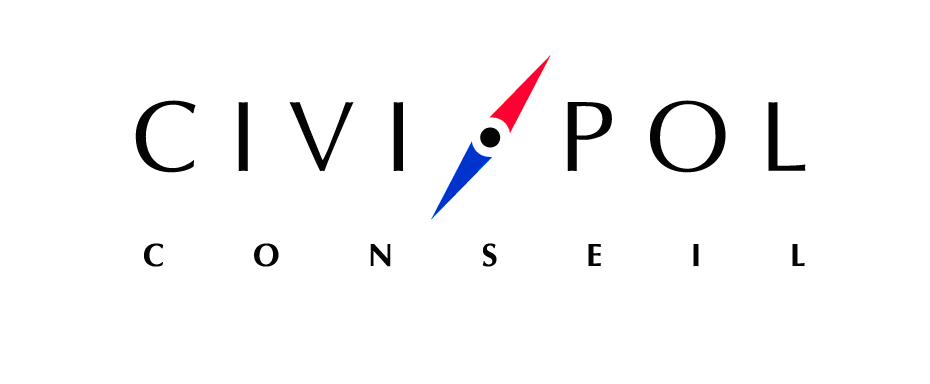
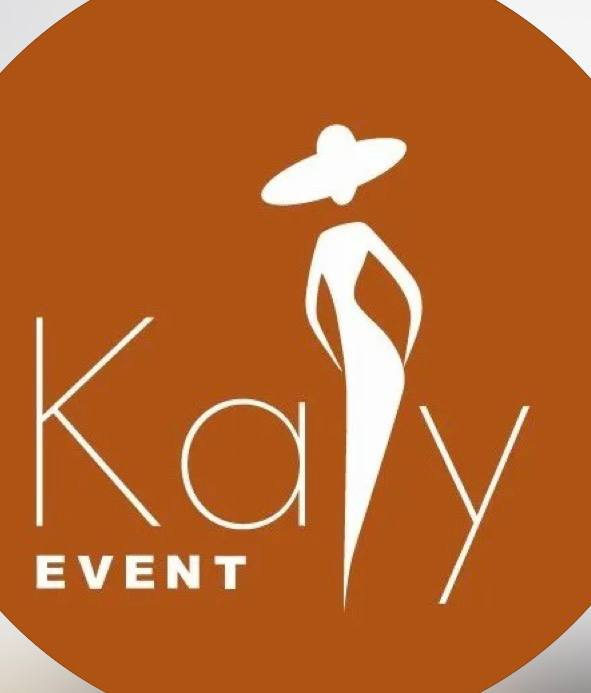
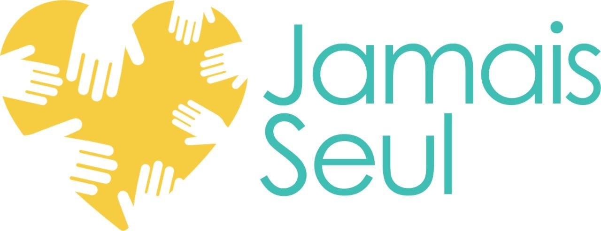

Faveur Morak : stratège, créatrice, vidéaste et storyteller

Je crée des contenus que les gens regardent vraiment.
Consultante en communication digitale, community manager et créatrice de contenus basée à Abidjan. J'ai accompagné Hemisphere Africa, Maell des bouquets, Yoni Style, Nicksoil et Djamo, de la stratégie au tournage, jusqu'aux résultats mesurables.
-
Stratège
Stratégie digitale, community management, campagnes et calendriers éditoriaux
-
Créatrice
Reels, TikToks, stories, teasers et formats immersifs à fort potentiel viral
-
Vidéaste
Tournage caméra ou smartphone, montage sur CapCut, VN, InShot et Canva Video
-
Storyteller
Rédaction engageante, direction visuelle et coordination éditoriale
Les preuves en images
Résultats concrets et croissance des communautés sur les comptes gérés. Captures réelles, 100 % organiques.
Réalisations
Print & événementiel d'abord, puis vidéos. Direction artistique, identité visuelle et contenus en mouvement.

À propos
✦ Créative, dynamique & rigoureuseJe suis Faveur, consultante en communication digitale, community manager et créatrice de contenus basée à Abidjan. Diplômée d'un Bachelor en Business Administration, je transforme les marques en histoires captivantes que l'on a envie de suivre.
- Concevoir des stratégies digitales qui performent
- Créer des Reels & TikToks à fort potentiel viral
- Raconter les marques avec émotion et rigueur
Parcours
Hemisphere AfricaConsultante en communication digitale & stratégieDéc. 2025 - Aujourd'hui
- Élaboration de stratégies et recommandations de communication digitale.
- Conception de concepts créatifs et de contenus pour les réseaux sociaux.
- Élaboration et suivi des calendriers éditoriaux.
- Coordination des équipes créatives, audiovisuelles et de production.
- Gestion des briefs et suivi de la production des contenus.
- Suivi de la cohérence éditoriale et de la performance des publications.
- Participation à la conception de campagnes et au développement de l'image de marque.
Maell des bouquetsCréatrice de contenu2026 - Aujourd'hui
- Création et production de contenus visuels et vidéos percutants (Reels, TikToks, stories).
- Mise en valeur esthétique et poétique des créations florales, coffrets cadeaux et collections.
- Écriture de scénarios, cadrage smartphone haute définition et montage dynamique sur CapCut / VN.
- Storytelling visuel renforçant l'attachement à la marque et l'émotion partagée avec les clients.
Yoni StyleCommunity manager2026 - Aujourd'hui
- Gestion, modération et animation quotidienne des pages réseaux sociaux (Instagram & TikTok).
- Élaboration du calendrier éditorial pour les lancements de collections et événements expo-vente.
- Création de visuels percutants, lookbooks et formats promotionnels pour la maroquinerie et chaussures.
- Engagement et fidélisation de la communauté, réponses réactives et suivi des indicateurs de croissance.
Hemisphere AfricaCommunity managerDéc. 2025 - Juin 2026
- Élaboration et mise en œuvre de stratégies de communication digitale.
- Couverture de tournages, événements et lancements de marques.
- Création et gestion de contenus : photos, vidéos, visuels et textes.
- Coordination de la communication de projets institutionnels, notamment avec la CNPS et Civipol.
- Animation des communautés et suivi des performances des publications.
DjamoCommerciale & ambassadriceAvr. 2023 - Déc. 2024
- Major des ambassadeurs d'octobre 2023 à février 2024.
- Plus de 165 cartes Djamo vendues et forte promotion de la marque.
Formation
Bachelor Business Administration HECI · 2021 – 2024
Formation Aviation / Tourisme Youth Education · 2024
Baccalauréat Cours secondaires Méthodiste · 2021
Outils
CanvaCapCutVNInShotCanva VideoWordExcelPowerPoint
Langues
Français Langue maternelle
Anglais Intermédiaire
Atouts
LeadershipPrise de paroleOrganisationVitesse d'exécutionTravail en équipeVente & négociation
Ils m'ont fait confiance







Une idée ?
Racontons-la.
- E-mailmorak6@icloud.com
- Téléphone+225 07 67 66 04 76
- LocalisationAbidjan, Côte d'Ivoire
- CVTélécharger ↓